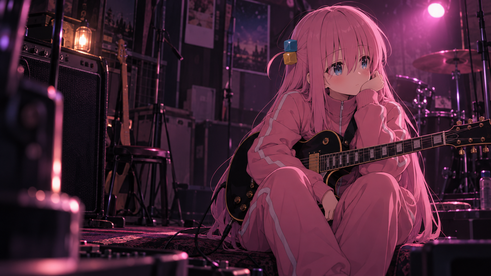

A LITTLE ROOM FOR BOCCHI
世界有点吵，
来听听一里的吉他。
把说不出口的话，藏进旋律里。
这里收藏着粉色的心动，和一点点向前的勇气。
ひとりじゃない。在这里，不必一个人。FAN SPACE
EST. 2026
EST. 2026
MY FAVORITE PERSON01 / 01

GOTOH HITORI内向的灵魂，也能发出很大的声音。
01 / ABOUT HER
后藤一里後藤 ひとり
不擅长和人说话，
却想用吉他，和世界打个招呼。
ぼっち・ざ・ろっく！
来自《孤独摇滚！》的少女吉他手，也是结束乐队的成员。习惯躲在角落，会紧张、会胡思乱想，但一旦拿起吉他，就有了属于自己的光。
喜欢她的理由很简单：
害怕也没关系，慢慢向前就很好。
- 乐队 / BAND
- 结束乐队結束バンド
- 担当 / PART
- 吉他 · 作词Guitar & Lyrics
- 标志 / SIGNATURE
- 粉色运动服还有蓝黄小发饰
- 关键词 / VIBE
- 内向，但很闪耀Quiet, but shining
02 / LITTLE TREASURES把喜欢，认真收藏。
心动收藏.
一些舍不得划走的瞬间，一些属于一里的颜色。
点击图片放大 · 点击爱心收藏到这台设备
03 / PRESS PLAY给今天，配一段旋律。
放映时间.
想把那些闪闪发光的现场，再看一遍。
A MOMENT WORTH REPLAYING
把喜欢的片段，留在这里。MY LITTLE CINEMA下一场心动，
下一场心动，
由你来选。
这里留给你最喜欢的演出、片段，或自己剪辑的视频。
仅在当前浏览器预览，不会上传。
公开展示的视频将在选好素材后加入。
即使步伐很小，
也有正在前进的声音。